Golf Cart Lift Kits
Club Car · E-Z-GO · Yamaha
We carry the best golf cart lift kits in the industry for Club Car, E-Z-GO and Yamaha, and we install them. Not sure which kit fits your cart? Call the shop at 832-814-0452.

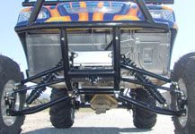

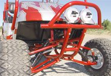

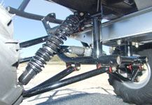

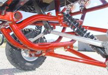

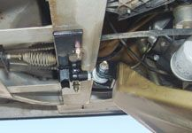

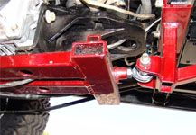

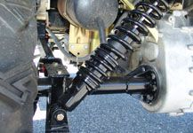

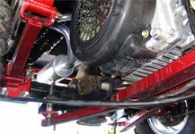

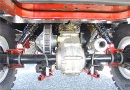
Club Car Golf Cart Lift Kits
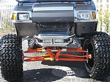
Club Car Long Travel
- Infinite Adjustable Coil-Over Shocks
- (Optional Nitrogen Shocks Avail )
- Narrow Track Width Equal to Rear of Cart!
- Bump Steering
- Smooth Stable Ride!
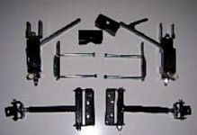
Club Car 6 Spindle
- Fits 1984 – Up Club Car Carts
- No Cutting or Welding
- Easy Bolt-On Installation
- Adjustable Camber
- Tire Size – 22″ x 11″ x 10″
- Pre ’97 for gas models ’96 and older
- ’97 to 2003 Silver Dust Covers ’03-Present Black Dust Covers
- Available with struts
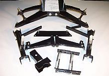
Club Car A-Arm Lift
- Available in 4″, 6″, 8″
- Easy Bolt-On Installation
- True Independent A-Arm Suspension
- Lengthens Wheel Base
- Adjustable Camber
- No Cutting or Welding
- ATV Design & Durability
- 4″A-Arm Tire Size – 23″ x 10 1/2″ x 12″
- 6″ A-Arm Tire Size – 24″ x 11″ x 10″
- 8″ A-Arm Tire Size – 26″ x 12″ x 12″
- Pre ’97 for gas models ’96 and older
- ’97 to 2003 silver dust cover ’03-Present Black Dust Covers
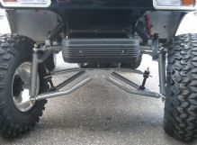
New: Super Sport 6
- Heavy Duty Tubular A-Arm Design
- Lengthens Wheel Base 3″
- All Sports Exclusive Extreme Angle Ball Joints
- Heavy Duty 5/8″ Steering Arms
- Ball Joints Allow for Precision Camber Adjustment
- (No Slots!)
- Easy Bolt on Installation
- Stock Colors Available- Black or Silver
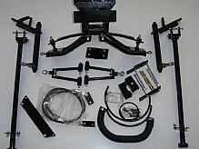
Biggest Production Lift Kit
- 1998 – Present Gas Only
- A-Arm Design
- Easy Bolt Installation
- Accepts 28″ Tires
- 5″ of Wheel Travel
- Tire Size – 28″ x 12″ x 12″
- ’03-Present Black Dust Covers
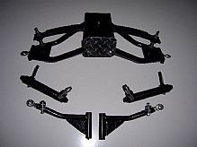
Precedent 3″ or 6″ Lift Kit
- No Cutting or Welding
- Cutting Edge A-Arm Design
- Lengthens Wheel Base
- Adjustable Camber
- Available in 3″ or 6″ Lifts
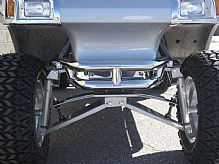
Specialty Powder Coated Lift Kits
- Offer your customers their choice of color for their lift!
- Call for Details and Samples of Specialty Colors & Finishes!
EZ Go Golf Cart Lift Kits
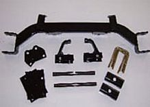
3″ EZ-Go Electric Lift Kit
- Fits 1994 – 2000 Year Carts
- No Cutting or Welding
- Easy Bolt-On Installation
- Tire Size – 22″x 11″x 8″
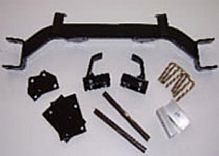
3″ EZ-Go Gas Lift Kit
- Fits 1994 – 2000 Year Carts
- No Cutting or Welding
- Easy Bolt-On Installation
- Tire Size – 22″x 11″x 8″
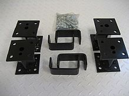
4″ Block
- Marathon 4″ Block Lift Electric
- Marathon 4″ Block Lift Gas
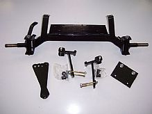
4″ Workhorse
- 2001 and up
- No Cutting or Welding
- Tire Size – 23″ x 10 1/2″ x 12″
- For 1200 Series Workhorse
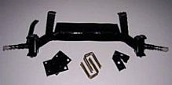
4″ EZ-Go Electric 2001 – Up
- Drop Axle with Spindles
- No Steering Riser
- More Durable Than All Other Lifts
- More Ground Clearance
- Direct Bolt-On Design
- Less Installation Time
- Tire Size – 23″ x 10 1/2″ x 12″
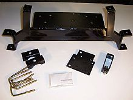
4″ EZ-Go Electric Lift 2001 – Up
- Tire Size – 23″ x 10 1/2″ x 12″
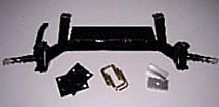
4″ EZ-Go Gas 2001 – Up
- Drop Axle with Spindles
- No Steering Riser
- More Durable Than All Other Lifts
- More Ground Clearance
- Direct Bolt-On Design
- Less Installation Time
- Tire Size – 23″ x 10 1/2″ x 12″
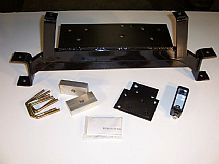
4″ EZ-Go Gas Lift 2001 – Up
- Tire Size – 23″ x 10 1/2″ x 12″
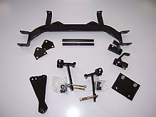
5″ Workhorse
- 1994-2
- No Cutting or Welding
- Tire Size – 23″ x 10 1/2″ x 12″
- 1200 Workhorse Series
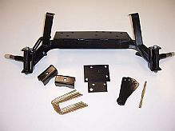
5″ EZ-GO 2001 – Up
- Electric Drop Lift With Spindles
- No Steering Riser
- More Durable Than All Other Lifts
- More Ground Clearance
- Direct Bolt-On Design
- Less Installation Time
- Tire Size – 23″ x 10 1/2″ x 12″
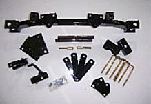
5″ EZ-Go Electric Lift Kit
- Fits 1994-2000 Year Carts
- No Cutting or Welding
- Easy Bolt-On Installation
- Tire Size – 23″ x 10 1/2″ x 12″
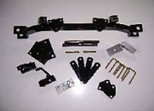
5″ EZ-Go Gas Lift Kit
- Fits 1994-2000 Year Carts
- No Cutting or Welding
- Easy Bolt-On Installation
- Tire Size – 23″ x 10 1/2″ x 12″
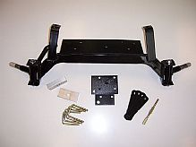
5″ Gas 2001 – Up
- Drop Lift With Spindles
- No Steering Riser
- More Durable Than All Other Lifts
- More Ground Clearance
- Direct Bolt-On Design
- Less Installation Time
- Tire Size – 23″ x 10 1/2″ x 12″
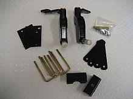
6″ EZ-Go Lift Kit
- 2001-Present EZ-Go Lift Kit
- Easily Accepts 23″ Tires
- Must Use 10″ or 12″ Wheels
- Installs in Minutes!
- No Cutting or Welding
- Simple Bolt-On Design
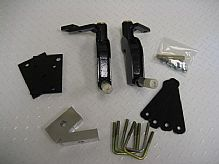
6″ EZ-Go Spindle Lift Gas
- 2001-Present EZ-Go Lift Kit
- Easily Accepts 23″ Tires
- Must Use 10″ or 12″ Wheels
- Installs in Minutes!
- No Cutting or Welding
- Simple Bolt-On Design
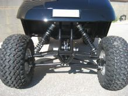
EZ-Go 6″ Long Travel
- Infinite Adjustable Coil-Over Shocks
- (Optional Nitrogen Shocks Avail )
- Narrow Track Width Equal to Rear of Cart!
- Bump Steering
- Smooth Stable Ride!
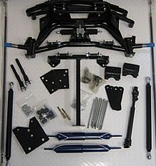
EZ-Go 8″ Ultra Lift Kit
- 2001-Present Golf Cars
- Super Heavy Duty – Off Road Kit!
- 4 Link Front Suspension ~ Easy Bolt On
- Accepts 28″ Tires
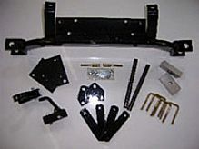
EZ-Go High 5
- Fits 1994 – early 2001 Year Carts
- Lengthens Wheel Base
- Wider Stance
- No Cutting or Welding
- Tire Size – 27″ x 12″ x 10″
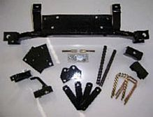
EZ-Go High 5″ Electric Lift Kit
- Fits 1994 – early 2001 Year Carts
- Lengthens Wheel Base
- Wider Stance
- No Cutting or Welding
- Tire Size – 27″ x 12″ x 10″
Yamaha Golf Cart Lift Kits
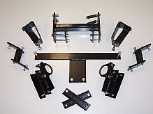
4″ G1
- Easy bolt on installation
- No heating or bending
- Accepts 20″ tires
- Lengthens wheel base 2″
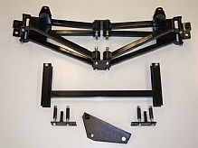
7″ Super Duty Lift Kit
- Fits Models G14, G16, G19
- No Cutting or Welding
- Gas or Electric
- Tire Size – 24″ x 11″ x 10″
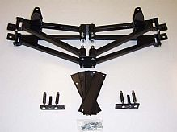
7″ Super Duty Lift Kit
- Fits Models G2, G9
- No Cutting or Welding
- Gas or Electric
- Tire Size – 22″x 11″x 10″
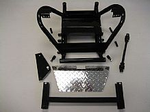
Yamaha 6″ G-Max Lift Kit
- Fits Model G22
- No Cutting or Welding
- Gas or Electric
- Only G-Max Kit with Adjustable Camber
- Tire Size – 23″ x 10 1/2″ x 12″
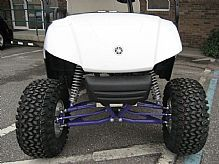
Yamaha Drive 2007+ 6″ Long Travel
- Brand New!!
- Long Travel A-Arm Lift
- 45 Degrees of Steering – Track Width Equal to the Rear of Cart! – Infinite Adjustable Coil-Over Shocks – Optional Billet Nitrogen Shocks Available – Superior Steering Geometry “O” Bump Steer – Easy Bolt-On Installation – Smooth Stable Ride!
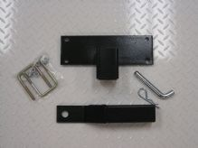
Yamaha Hitch Assembly
- Yamaha Hitch, Receiver Hitch, & Pin